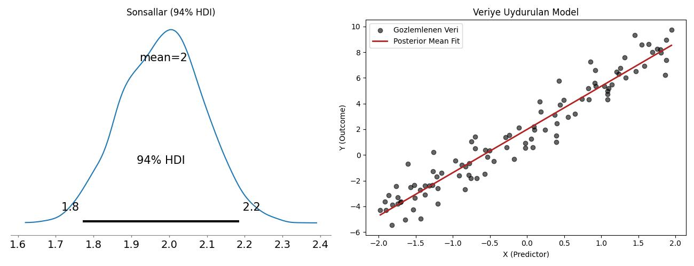

PyMC
Olasılıksal Programlama adı verilen yaklaşımın en iyi örneği PyMC paketidir herhalde. Bir Bayessel modelden örneklem toplamak, yani sonsal (posterior) dağılımını bulmak için paket kullanmak istemezsek bunu Metropolis yöntemi, ya da Gibbs örneklemesi gibi yöntemlerle yapabilirdik, her şeyi sıfırdan kendimiz kodlardık. Fakat eğer elimizde çetrefil bir model ise, ve/ya da pek çok farklı değişkeni, onların ilişkilerini ardı ardına denemek istersek, PyMC gibi "Olasılıksal Programcılık" yapmamızı sağlayan kütüphaneleri de kullanmak mümkündür.
Temel olarak PyMC ile yapılan değişkenleri, varsa onların dağılımını tanımlamak, veriyi sağlayıp gerisini pakete bırakmaktır.
PyMC değişkenleri deterministik olabilir, ya da olasılıksal olabilir. Bir olasılıksal değişken, şöyle olabilir,
pm.Normal("beta", mu=0, sigma=1)
Deterministik değişkenler düz hesaptırlar, olasılıksal ya da diğer değişkenleri kullanarak bir hesap yaparlar, tabii ki temelleri olasılıksal olduğu için onlar da olasılıksaldır. Bu temel olasılık alanında rasgele değişkenlerin düz formüller ile birleştirilmesine benzer. İki Gaussian dağılımı toplayabiliriz, log'unu alıp çarpabiliriz, vs.
Bir model içinde kodlama şuna benzer,
import pymc as pm
with pm.Model() as model:
# 1. Onseller -> Gozlemlenmiyor, sabit degerleri var
beta = pm.Normal("beta", mu=0, sigma=1)
sigma = pm.HalfNormal("sigma", sigma=1)
# 2. Deterministik (Direk Hesap) -> Onsellerin fonksiyonu, her adimda guncellenir
mu = beta * x_data
# 3. Olurluk (Anchored) -> Gozlemlenen verinin, modeli baz alarak, olurlugunu hesapla
y_obs = pm.Normal("y_obs", mu=mu, sigma=sigma, observed=y_data)
Problem formülize edildikten sonra PyMC sonsaldan örneklem toplamaya
başlayabilir. Paket hangi değişkenin örneklemleneceği nasıl bilir?
Basit, mesela pm.Normal( .. observed=y_data) şeklinde tanımlı her
olasılıksal değişken bir olurluk hesabı demektir, paket observed
kelimesini görünce takip eden veriyi alıp o dağılıma ne kadar muhtemel
/ olur olduğunu "sorar". Sonuç olurluk (likelihood) hesabıdır. Geri
kalan her şey örneklenir, üstte görülen alpha, beta bu kategoriye
girer, bir onsel tanımları vardır, ama observed geçilmemiştir, bu
değişkenler her döngü adımında örneklenir.
Altta daha geniş, nihai bir örnek görüyoruz. Diyelim ki bir lineer regresyon yapmak istiyoruz, $y = \alpha + \beta x$ formülünü veriye uyduracağız. Bayes yaklaşımında $\alpha,\beta$ değişkenleri olasılıksaldır, ve onsel dağılımları vardır, alttaki örnek için
$$ \alpha \sim Normal(0, 10), \quad \beta \sim Normal(0,5), \quad \sigma \sim HalfNormal(5) $$
import numpy as np
import pandas as pd
import pymc as pm
import arviz as az
import matplotlib.pyplot as plt
np.random.seed(42)
# Ornek veri yarat
true_intercept = 2.0
true_slope = 3.5
true_sigma = 1.2
N = 100
x_data = np.random.uniform(-2, 2, size=N)
noise = np.random.normal(0, true_sigma, size=N)
y_data = true_intercept + true_slope * x_data + noise
# Model tanimla
with pm.Model() as tutorial_model:
# Onseller, baz degerleri sabit hiperparametreler (dagilimlar)
alpha = pm.Normal("alpha", mu=0, sigma=10) # Intercept prior
beta = pm.Normal("beta", mu=0, sigma=10) # Slope prior
sigma = pm.HalfNormal("sigma", sigma=5) # Noise scale prior
# Deterministik hesap (her MCMC adiminda hesaplanir)
# Onselleri tahmin edici parametreler ile birlestirip bir lineer tahmin yaratir
mu = pm.Deterministic("mu", alpha + beta * x_data)
# Olurluk, gozlemlenen veri burada dahil edilir, modele gore verinin olurlugu nedir
y_obs = pm.Normal("y_obs", mu=mu, sigma=sigma, observed=y_data)
with tutorial_model:
idata = pm.sample(
draws=1000,
tune=1000,
chains=2,
return_inferencedata=True,
random_seed=42,
progressbar=True
)
print(az.summary(idata, var_names=["alpha", "beta", "sigma"]))
fig, axes = plt.subplots(1, 2, figsize=(13, 5))
az.plot_posterior(
idata,
var_names=["alpha", "beta", "sigma"],
ax=axes[0]
)
axes[0].set_title("Sonsallar (94% HDI)")
axes[1].scatter(x_data, y_data, color="black", alpha=0.6, label="Gozlemlenen Veri")
post_alpha = idata.posterior["alpha"].values.flatten()
post_beta = idata.posterior["beta"].values.flatten()
x_plot = np.linspace(x_data.min(), x_data.max(), 100)
mean_alpha = post_alpha.mean()
mean_beta = post_beta.mean()
axes[1].plot(x_plot, mean_alpha + mean_beta * x_plot, color="firebrick", lw=2, label="Sonsal Ortalama Uyumu")
axes[1].set_xlabel("X (Tahminci)")
axes[1].set_ylabel("Y (Sonuc)")
axes[1].set_title("Veriye Uydurulan Model")
axes[1].legend()
plt.tight_layout()
plt.savefig("pymc_01.jpg")
Data successfully generated.
mean sd hdi_3% hdi_97% ... mcse_sd ess_bulk ess_tail r_hat
alpha 1.984 0.112 1.771 2.185 ... 0.003 2730.0 1388.0 1.0
beta 3.363 0.091 3.178 3.526 ... 0.002 3119.0 1368.0 1.0
sigma 1.101 0.079 0.952 1.253 ... 0.002 2778.0 1354.0 1.0
[3 rows x 9 columns]

MCMC Örneklem Değerlerine Erişim ve Sonsal Dağılımın Yorumlanması
PyMC ile model örneklemesi (pm.sample) tamamlandığında, algoritma
(varsayılan olarak NUTS/HMC) önsel dağılımlardan başlayarak verinin
olurluğu doğrultusunda parametre uzayında adımlar atar. Bu adımların
her biri InferenceData (idata) nesnesinin içindeki posterior
veri yapısında saklanır.
Örneklem zinciri tamamlandıktan sonra parametrelerin adımlarını tek tek incelemek veya her döngüdeki değerlerine erişmek mümkündür. Örneğin ilk zincirdeki (Chain 0) ilk 5 örneklem adımına erişmek için:
# Her parametreye ait örneklem adımlarını ornekleyelim
alphas = idata.posterior["alpha"].values
betas = idata.posterior["beta"].values
# İlk 5 adımı basalım
for draw in range(5):
print(f"Adim {draw}: alpha = {alphas[0, draw]:.4f}, beta = {betas[0, draw]:.4f}")
Adim 0: alpha = 1.8337, beta = 3.2055
Adim 1: alpha = 1.8564, beta = 3.4190
Adim 2: alpha = 1.9959, beta = 3.2733
Adim 3: alpha = 1.9791, beta = 3.3675
Adim 4: alpha = 1.9791, beta = 3.3675
Grafik ve özet tablosu incelendiğinde ise:
Sentetik Veri Üretim Parametreleri: $\alpha = 2.0$, $\beta = 3.5$, $\sigma = 1.2$
Sonsal Ortalamalar: $\alpha \approx 1.98$, $\beta \approx 3.36$, $\sigma \approx 1.10$
Bayessel yaklaşım sadece nokta tahmini vermekle kalmıyor, $\%94$ Yüksek Yoğunluk Aralığı (HDİ - High Density İnterval) ile gerçek parametrelerin hangi aralıkta bulunduğuna dair belirsizliği de başarıyla modellemiştir. Metriklerdeki $R_{hat} = 1.0$ değeri ise Markov zincirlerinin yakınsadığını (converge) teyit eder.
Yukarı